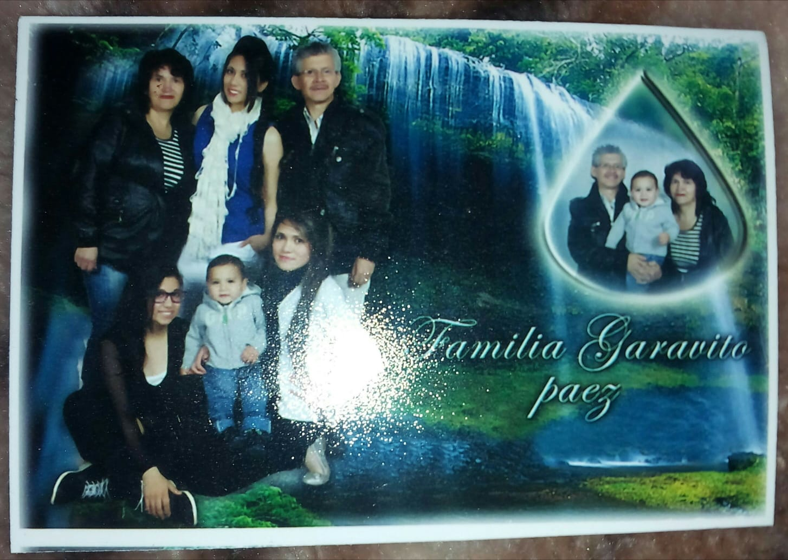
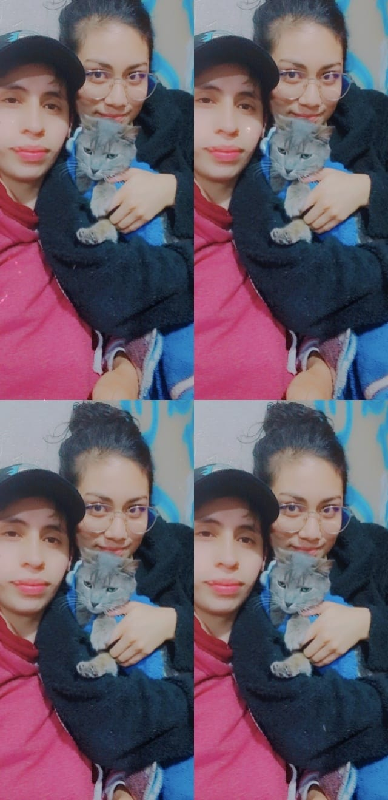

Mi nombre es Kelly Yuliana Garavito Paez tengo 23 años vivo en Bogota, me gradue en el año 2015 con tituto tecnico en analisis de muestras quimicas, despues de esta fecha me dedique a trabajar en tiendas en servicio al cliente, en el año 2017 entre a estudiar donde realice un tecnologo en gestion empresarial en el sena y por medio de este titulo realice la homologalizacion en Administracion de empresas la cual por motivos personales no pude finalizar y quede en 8 semestre. Despues me dedique a trabajar en call center donde dure hasta este año mes de abril, dedici salirme por que no era mi ambito y no me sentia comoda si seguia en ese tipo de trabajo. Actualmente estudio programacion y quiero conseguir un trabajo donde pueda desempeñarme en el cargo y adquirir conocimiento diferente y mejorar mi calidad de vida.
Actualmente vivo con mi pareja y mi suegro hace mas de 1 año y medio y tenemos 3 gaticas, vivimos muy felices
Tengo dos hermanas y un sobrino, mis padres viven con ellas, mis padres se dedican a la zapateria realizan todo tipo de calzado y se han dedicado a esto durante la mayor parte de su vida, mi hermana mayor Yenny se dedica a estudiar enfermeria y mi hermana menor Leidy estudia programacion y es por ella que me llamo mas la atencion este tema por que desde pequeña fui buena con la tecnologia pero me desvie y enfoque en una carrera a cual no me hace feliz no me gusta y adicional no es muy solicitada aqui en colombia.
A ella la rescate de la calle, la cuido y la amo muchisimo, va a cumplir 1 año con nosotros